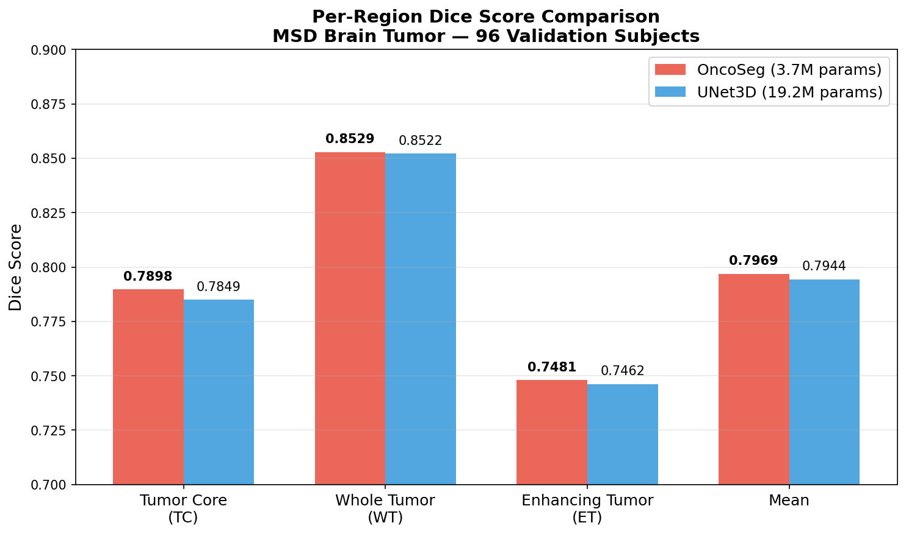
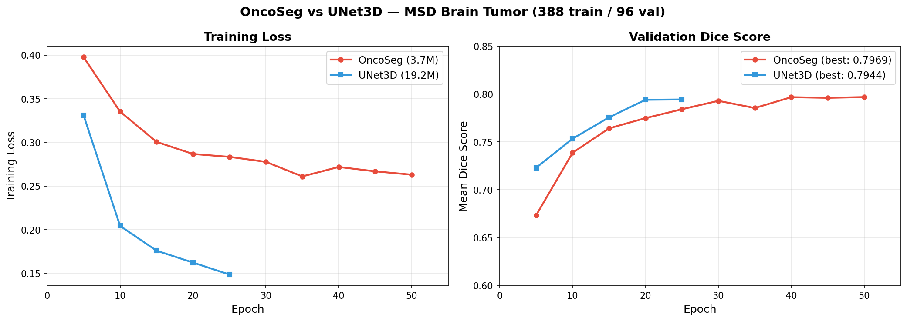
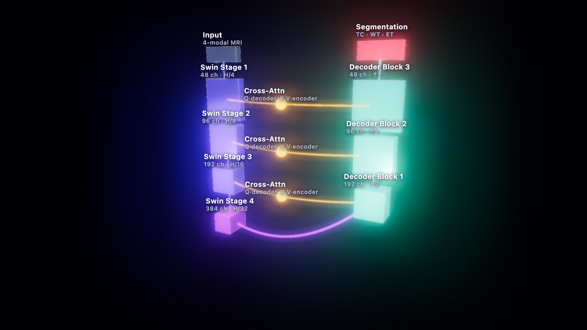

A Swin-Transformer encoder × CNN decoder, joined by cross-attention skips — for 3D brain-tumour segmentation and automated treatment-response assessment.
Trained and evaluated on the MSD Brain Tumour task (388 train / 96 validation subjects, 50 epochs, multi-label TC/WT/ET). Every number below is measured on held-out validation — nothing is simulated.


| Model | Dice TC | Dice WT | Dice ET | Dice mean | HD95 mean ↓ |
|---|---|---|---|---|---|
| OncoSeg 3.7M params | 0.7898 | 0.8529 | 0.7481 | 0.7969 | 15.35 mm |
| UNet3D 19.2M params | 0.7849 | 0.8522 | 0.7462 | 0.7944 | 21.03 mm |
Higher Dice is better; lower HD95 (95th-percentile Hausdorff distance) is better. OncoSeg edges UNet3D on every region while cutting boundary error by ~27% at a fraction of the parameters. Additional SwinUNETR / UNETR baselines and the cross-attention ablation run via the Kaggle notebook and will be added when complete.
An asymmetric hybrid U-shape: a Swin-Transformer encoder builds global context as it downsamples, a CNN decoder rebuilds pixel-precise boundaries, and cross-attention skips let the decoder query exactly the encoder evidence it needs — rather than a blind concatenation.
